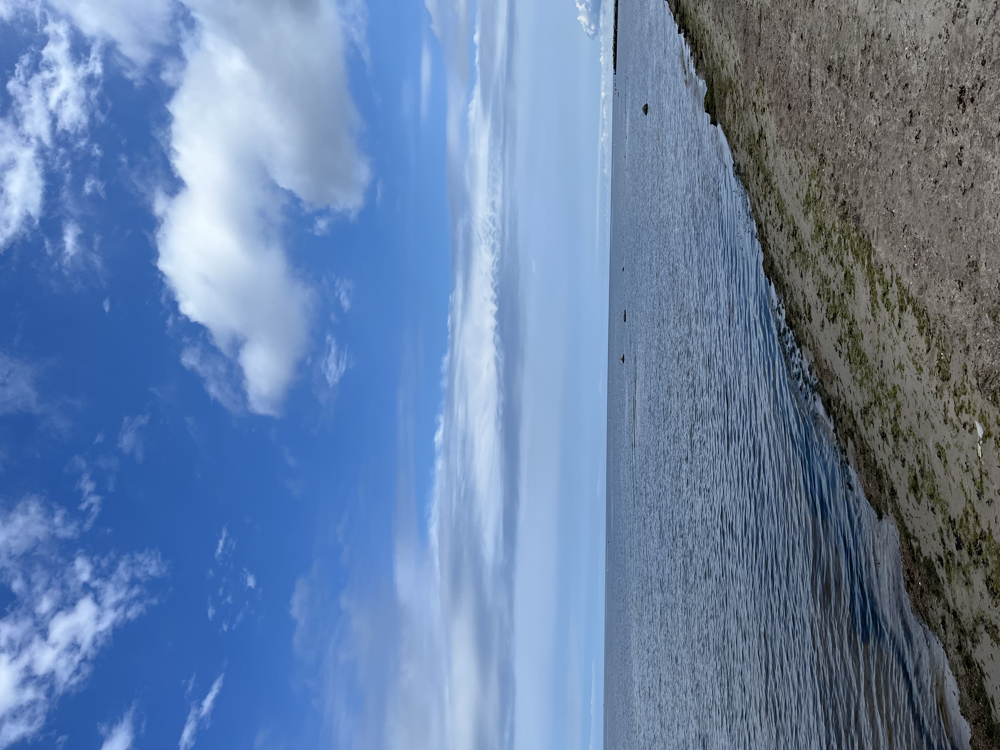
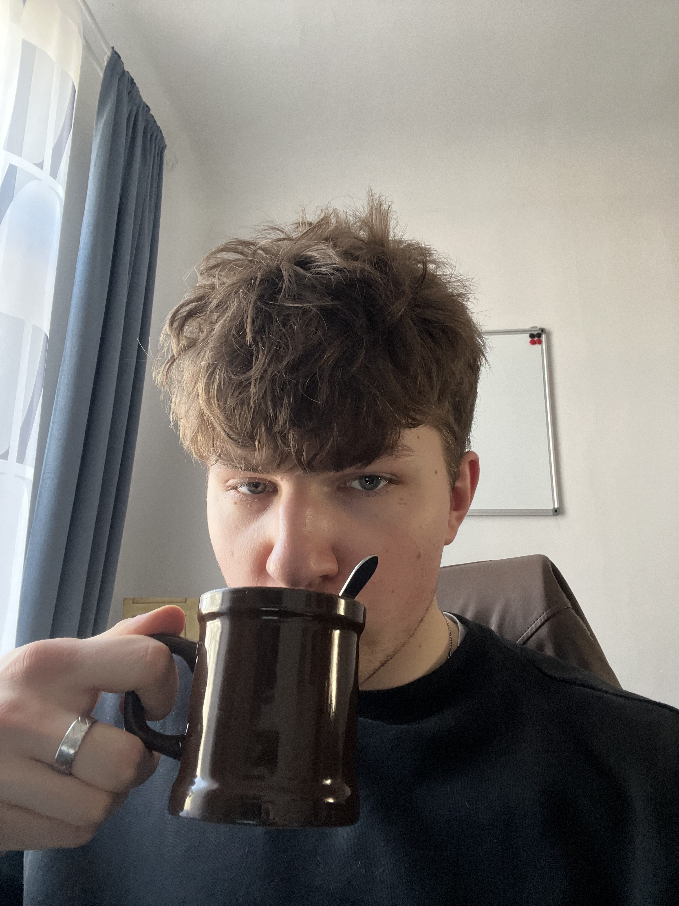
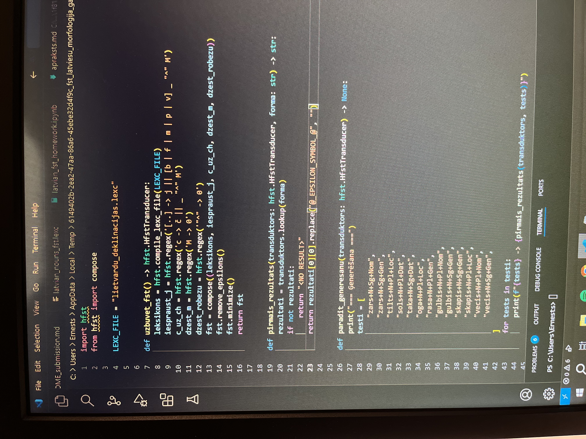
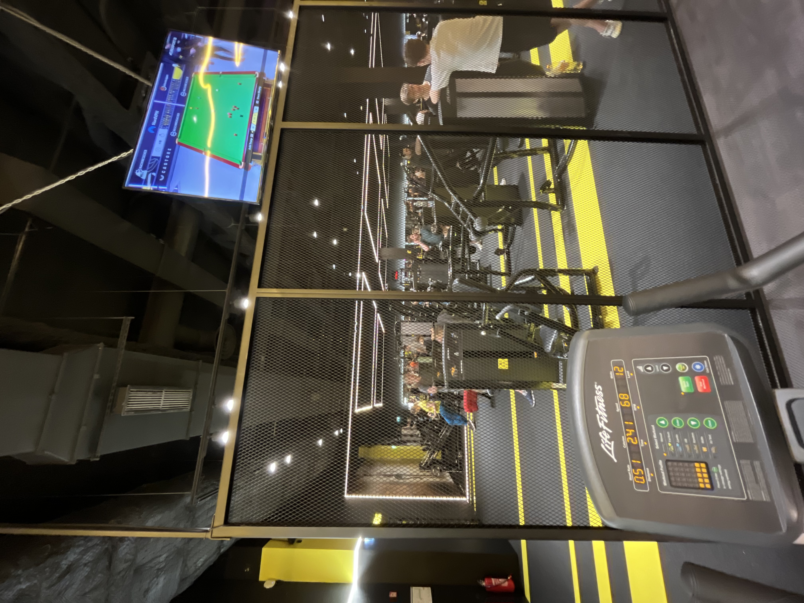
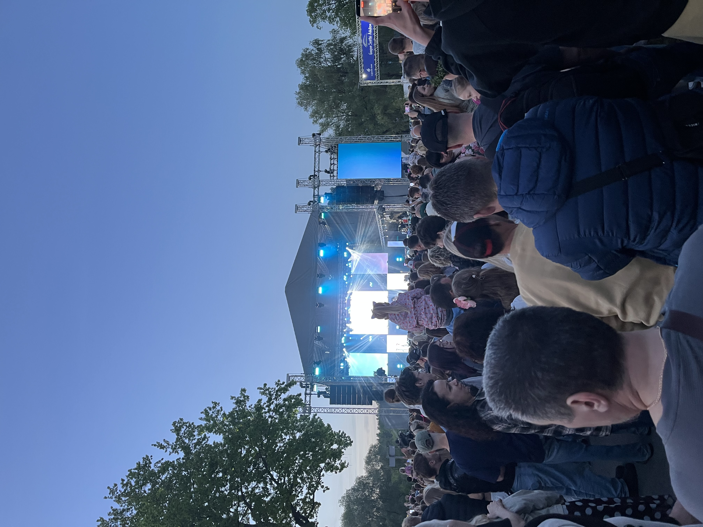

Autora veidota tīmekļa vietne
Viena darba nedēļa Datorikas nodaļas studenta dzīvē
Šajā vietnē es parādu vienu darba nedēļu Datorikas nodaļas studenta dzīvē. Tā nav domāta kā precīzs grafiks pa stundām, bet vairāk kā sajūta par to, kā paiet parasta nedēļa — ar lekcijām, praktiskajiem darbiem, kodu, e-studijām, treniņiem un brīžiem, kad vienkārši vajag mazliet atslēgties no ekrāna. Vietnes sadaļās apvienoju gan studiju vidi, gan ikdienas ritmu, jo man šķiet, ka tie kopā vislabāk raksturo reālu studenta nedēļu.
Sākt nedēļu
01 / Nedēļas starts
Kafija un pirmie uzdevumi
Darba nedēļa man bieži sākas diezgan vienkārši — ar kafiju un mēģinājumu saprast, kas šonedēļ vispār jādara. Pirms ķeros pie lekcijām vai praktiskajiem darbiem, parasti pārskatu e-studijas, termiņus un to, kas palicis neizdarīts no iepriekšējās nedēļas. Šis brīdis nav nekas īpašs, bet tas palīdz savākt domas. Ja pirmdienā uzreiz nesaprotu, kas ir svarīgākais, vēlāk viegli pazust starp dažādiem kursiem, failiem un uzdevumiem. Kafija šeit ir kā mazs sākuma rituāls — brīdis pirms pārslēgšanās darba režīmā. Ne vienmēr nedēļa sākas produktīvi, bet vismaz ir sajūta, ka pamazām var sākt kustēties uz priekšu. Šajā brīdī svarīgi nav izdarīt visu uzreiz, bet saprast, ar ko sākt un ko nevajag atlikt līdz pēdējam brīdim.

02 / Praktiskie darbi
Kods, kļūdas un risinājumi
Viena no lielākajām nedēļas daļām ir darbs ar kodu. Lekcijā bieži šķiet, ka ideja ir saprotama, bet tad atver projektu un sākas īstā pārbaude. Kaut kas nestrādā, parādās kļūda, kaut kur pietrūkst viens simbols vai arī izrādās, ka uzdevuma prasību esmu sapratis ne līdz galam pareizi. Šādos brīžos programmēšana nav tikai koda rakstīšana, bet arī pacietības treniņš. Reizēm vairāk laika aizņem nevis pats risinājums, bet saprašana, kur vispār ir problēma. Tomēr tieši tas arī palīdz mācīties. Kad pēc ilgākas meklēšanas izdodas kļūdu atrast, ir daudz labāka sajūta nekā tad, ja viss izdotos uzreiz. Pamazām no šādām situācijām rodas īsta izpratne. Man šķiet, ka praktiskie darbi vislabāk parāda, ka datorikā nepietiek tikai noklausīties teoriju — tā ir jāpārbauda pašam.

03 / Digitālā vide
Lekcijas, faili un materiāli
Liela daļa studiju ikdienas notiek datorā. E-studijas, prezentācijas, PDF faili, pieraksti, mapes un dažādi uzdevumu apraksti ir vide, kurā paiet diezgan daudz laika. No vienas puses, tas ir ērti, jo viss ir pieejams vienā vietā. No otras puses, ja neko nekārto, ātri sākas haoss. Dažreiz vajag vairāk laika, lai atrastu pareizo failu vai saprastu, kur tieši bija uzdevuma apraksts, nekā pašam uzdevumam. Tāpēc man svarīgi ir vismaz mēģināt uzturēt kārtību — saglabāt materiālus pareizajās mapēs, pierakstīt galvenās lietas un neatlikt visu uz pēdējo brīdi. Digitālā vide ļoti palīdz, bet tikai tad, ja pats tajā nepazūdi. Šī sadaļa man saistās ar to neredzamo studiju daļu, kuru citi bieži neredz — failu kārtošanu, pārlasīšanu un mēģinājumu salikt visu vienā saprotamā sistēmā.
.jpeg)
04 / Ikdienas ritms
Treniņš pēc lekcijām
Pēc vairākām stundām pie datora treniņš man ir veids, kā pārslēgties. Datorikas studijās daudz laika paiet sēžot, skatoties ekrānā, domājot par uzdevumiem vai mēģinot saprast, kāpēc kaut kas nestrādā. Sporta zāle palīdz uz brīdi iziet no šī režīma. Tur nav jādomā par failiem, kļūdām vai termiņiem — vienkārši jādara konkrēts darbs. Protams, ne vienmēr pēc lekcijām ir daudz enerģijas, un dažreiz ir grūti saņemties. Tomēr pēc treniņa bieži ir skaidrāka galva, un vakarā vieglāk atgriezties pie mācībām vai vismaz saprast, ko darīt tālāk. Man tas ir svarīgs nedēļas ritma elements, jo palīdz noturēt līdzsvaru starp mācībām un ikdienu. Bez šādas pārslēgšanās viss sāktu šķist kā viena gara sēdēšana pie ekrāna, tāpēc treniņš palīdz nedēļu padarīt normālāku.

05 / Nedēļas noslēgums
Atelpa koncertā
Darba nedēļas beigās ir svarīgi arī atslēgties. Pēc lekcijām, praktiskajiem darbiem, termiņiem un ilgām stundām pie datora koncerts ir labs veids, kā nomainīt vidi. Tajā brīdī vairs nav jādomā par kļūdu paziņojumiem vai nākamo uzdevumu, bet var vienkārši būt klāt notikumā. Man tas šķiet svarīgi, jo studenta dzīve nav tikai mācības un darbs pie datora. Ja visu laiku domā tikai par to, kas vēl nav izdarīts, ātri var pazust motivācija. Nedēļas beigās ir labi paskatīties arī uz to, kas tomēr ir izdevies — kaut kas saprasts, kaut kas pabeigts, kaut kas izlabots. Koncerts šajā lapā noslēdz nedēļu kā atgādinājums, ka arī atpūta ir daļa no normāla ritma. Pēc šāda brīža ir vieglāk sākt nākamo nedēļu, jo galva nav visu laiku tikai studiju režīmā.
